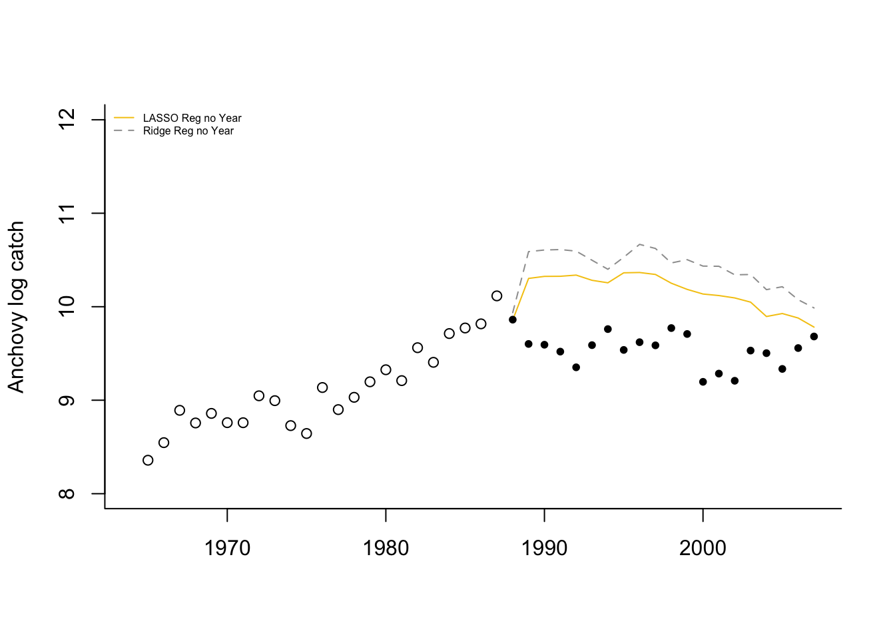

6.7 Prediction accuracy
We could use cross-validation compare prediction accuracy if we had a pre-defined set of models to compare. In our case, we do not have a set of models but rather a set of “number of variables” and the specific variables to include in that number are determined using the fit to the data (in some fashion). We cannot use variable selection (any sort) with our full dataset to chose the variables and then turn around and use cross-validation with the same dataset to test the out-of-sample prediction accuracy. Anytime you double-use your data like that, you will have severe bias problems.
Instead, we will test our models using sets of years that we held out for testing, i.e. that were not used for fitting the model or selecting variates. We will use the following test years: 1988 and 1989 as was used in Stergiou and Christou and 1988-1992 (five years). We will use the performance testing procedure in Chapter 5.
Computing the prediction error for a model
First we set up the test data frames.
We can then compute the RMSE for the predictions from one of our linear regression models. Let’s use the model selected by step() using AIC as the metric and stepwise variable regression starting from a full model, step.full.
## [1] 0.05289656We could also use forecast() in the forecast package to compute predictions and then use accuracy() to compute the prediction metrics for the test data.
## ME RMSE MAE MPE MAPE MASE
## Training set 0.00000000 0.11151614 0.08960780 -0.01540787 0.9925324 0.2480860
## Test set -0.03755081 0.05289656 0.03755081 -0.39104145 0.3910415 0.1039623Comparing the predictions for a suite of models
Let’s compare a suite of models and compare predictions for the full out-of-sample data that we have: 1988 to 2007.
Then we fit the three best lm models chosen via stepwise regression, exhaustive search or cross-validation:
modelname <- "Year+FIP"
fit <- lm(anchovy~Year+FIP, data=df)
fr.list[[modelname]] <- predict(fit, newdata=testdat)
modelname <- "Year+Trachurus+FIP"
fit <- lm(anchovy~Year+Trachurus+FIP, data=df)
fr.list[[modelname]] <- predict(fit, newdata=testdat)
modelname <- "6 variables"
fit <- lm(anchovy~Year+air+vwnd+BOP+FIP+TOP, data=df)
fr.list[[modelname]] <- predict(fit, newdata=testdat)Then we add the forecasts for Ridge Regression.
library(glmnet)
resp <- colnames(df)!="anchovy"
x <- as.matrix(df[,resp])
y <- as.matrix(df[,"anchovy"])
fit <- glmnet(x, y, family="gaussian", alpha=0)
n <- 20; s <- 0
for(i in 1:n) s <- s + cv.glmnet(x, y, nfolds=5, alpha=0)$lambda.min
s.best <- s/n
modelname <- "Ridge Regression"
newx <- as.matrix(testdat[,resp])
fr.list[[modelname]] <- predict(fit, newx=newx, s=s.best)LASSO regression,
fit <- glmnet(x, y, family="gaussian", alpha=1)
n <- 20; s <- 0
for(i in 1:n) s <- s + cv.glmnet(x, y, nfolds=5, alpha=1)$lambda.min
s.best <- s/n
modelname <- "LASSO Regression"
newx <- as.matrix(testdat[,resp])
fr.list[[modelname]] <- predict(fit, newx=newx, s=s.best)and elastic net regression.
fit <- glmnet(x, y, family="gaussian", alpha=0.5)
n <- 20; s <- 0
for(i in 1:n) s <- s + cv.glmnet(x, y, nfolds=5, alpha=0.5)$lambda.min
s.best <- s/n
modelname <- "Elastic net Regression"
newx <- as.matrix(testdat[,resp])
fr.list[[modelname]] <- predict(fit, newx=newx, s=s.best)Now we can create a table
restab <- as.data.frame(matrix(NA,1,21))
#restab <- data.frame(model="", stringsAsFactors=FALSE)
for(i in 1:length(fr.list)){
err <- fr.list[[i]]-testdat$anchovy
restab[i,2:(length(err)+1)] <- sqrt(cumsum(err^2)/1:length(err))
restab[i,1] <- names(fr.list)[i]
}
tmp <- restab[,c(1,6,11,16,21)]
colnames(tmp) <- c("model","5 yrs", "10 yrs", "15 yrs", "20 yrs")
knitr::kable(tmp)| model | 5 yrs | 10 yrs | 15 yrs | 20 yrs |
|---|---|---|---|---|
| Year+FIP | 0.6905211 | 0.8252467 | 0.9733136 | 1.0597621 |
| Year+Trachurus+FIP | 0.8324962 | 0.9598570 | 1.2391294 | 1.4442466 |
| 6 variables | 0.3612936 | 0.6716181 | 0.9543952 | 1.1356324 |
| Ridge Regression | 0.7822712 | 0.8393271 | 0.9564713 | 0.9673194 |
| LASSO Regression | 0.5959503 | 0.7471635 | 1.0132615 | 1.1769412 |
| Elastic net Regression | 0.7092379 | 0.8589573 | 1.1609910 | 1.3481830 |
If we plot the forecasts with the 1965-1987 data (open circles) and the 1988-2007 data (solid circles), we see that the forecasts continue the upward trend in the data while the data level off.
This illustrates a problem with using “Year” as a covariate. This covariate is deterministically increasing. If it is included in the model, then the forecasts will have an upward or downward trend. When using environmental, biological and effort covariates, one hopes that the covariates explain the trends in the data. It would be wiser to not use “Year” as a covariate.
LASSO regression with no year,
resp <- colnames(df)!="anchovy" & colnames(df)!="Year"
x <- as.matrix(df[,resp])
y <- as.matrix(df[,"anchovy"])
fit.lasso <- glmnet(x, y, family="gaussian", alpha=1)
n <- 20; s <- 0
for(i in 1:n) s <- s + cv.glmnet(x, y, nfolds=5, alpha=1)$lambda.min
s.best.lasso <- s/n
modelname <- "LASSO Reg no Year"
newx <- as.matrix(testdat[,resp])
fr.list[[modelname]] <- predict(fit.lasso, newx=newx, s=s.best.lasso)Ridge regression with no year,
resp <- colnames(df)!="anchovy" & colnames(df)!="Year"
x <- as.matrix(df[,resp])
y <- as.matrix(df[,"anchovy"])
fit.ridge <- glmnet(x, y, family="gaussian", alpha=0)
n <- 20; s <- 0
for(i in 1:n) s <- s + cv.glmnet(x, y, nfolds=5, alpha=1)$lambda.min
s.best.ridge <- s/n
modelname <- "Ridge Reg no Year"
newx <- as.matrix(testdat[,resp])
fr.list[[modelname]] <- predict(fit.ridge, newx=newx, s=s.best.ridge)Now we can create a table
| model | 5 yrs | 10 yrs | 15 yrs | 20 yrs | |
|---|---|---|---|---|---|
| 7 | LASSO Reg no Year | 0.7277462 | 0.7200965 | 0.7306603 | 0.6668768 |
| 8 | Ridge Reg no Year | 0.9741012 | 0.9555257 | 0.9792060 | 0.9121324 |
 Without “Year”, the model predicts 1988 well (using 1987 covariates) but then has a large jump upward after which is has a similar “flat-ish” trend as seen after 1989. What happened in 1988 (the covariate year affecting 1989)? The horsepower covariate, along with BOP (total boats) and TOP (boat tonnage), have a sudden upward jump in 1988. This is seen in all the fisheries. This suggests that in 1988 either a large number of new boats entered all the fisheries or what boats were counted as “purse seiners” was changed. Upon looking at the covariates, it seems that something changed in the recording from 1988 to 1996.
If we correct that jump from 1988 to 1989 (subtract the jump from all data 1989 onward), the Lasso and Ridge predictions without year look considerably better.